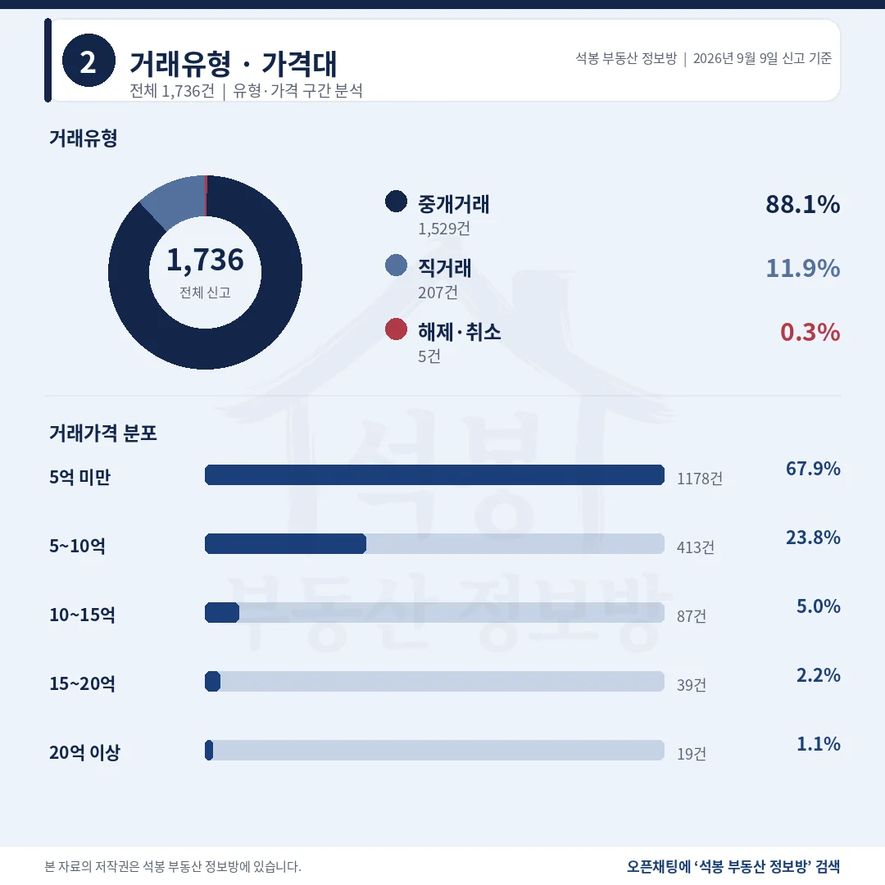
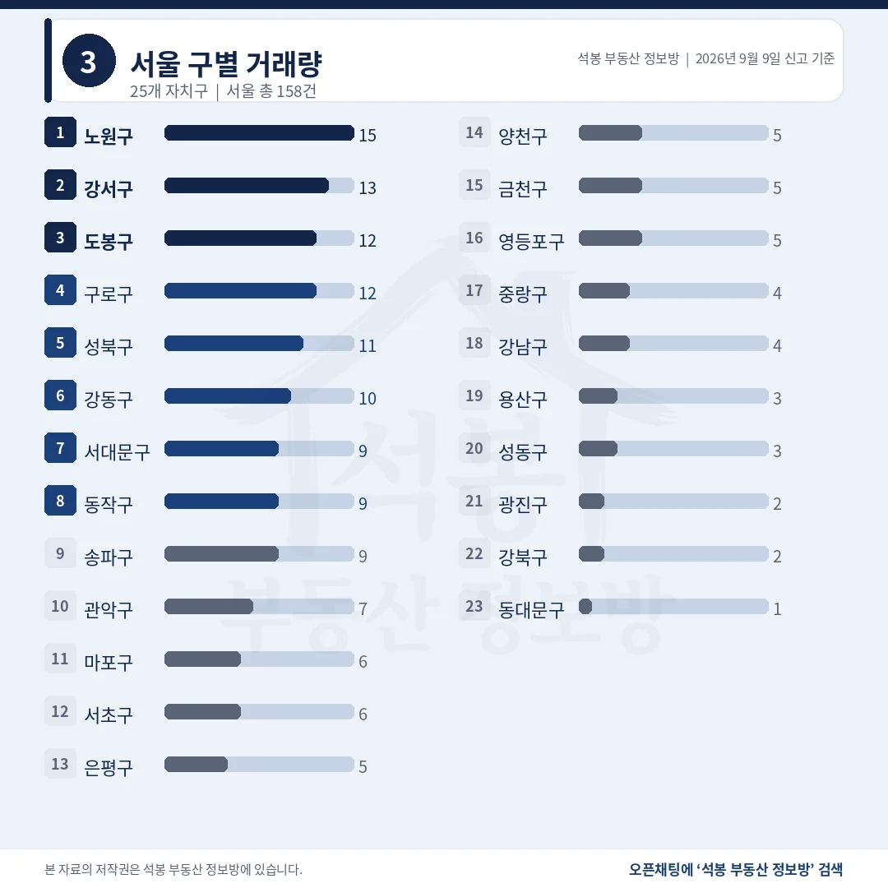
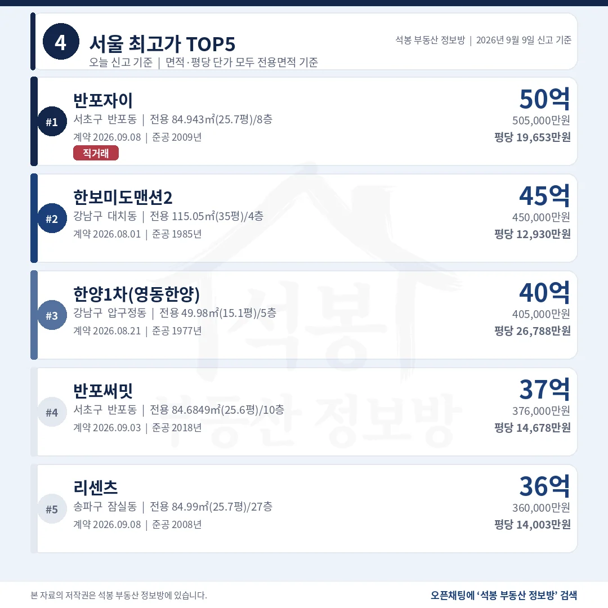
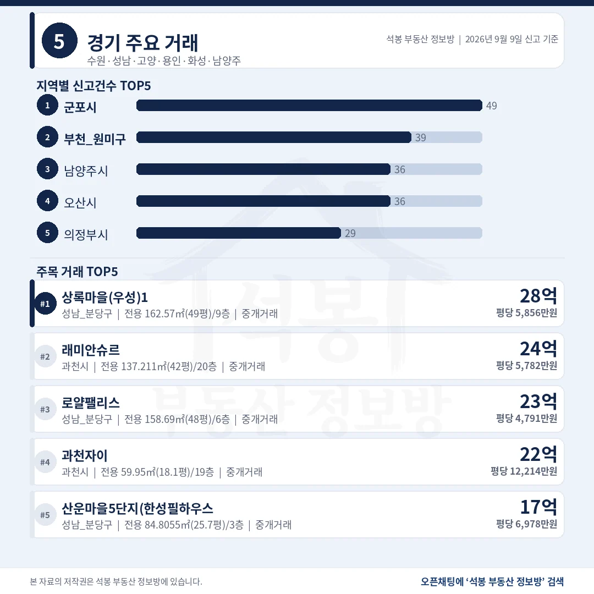
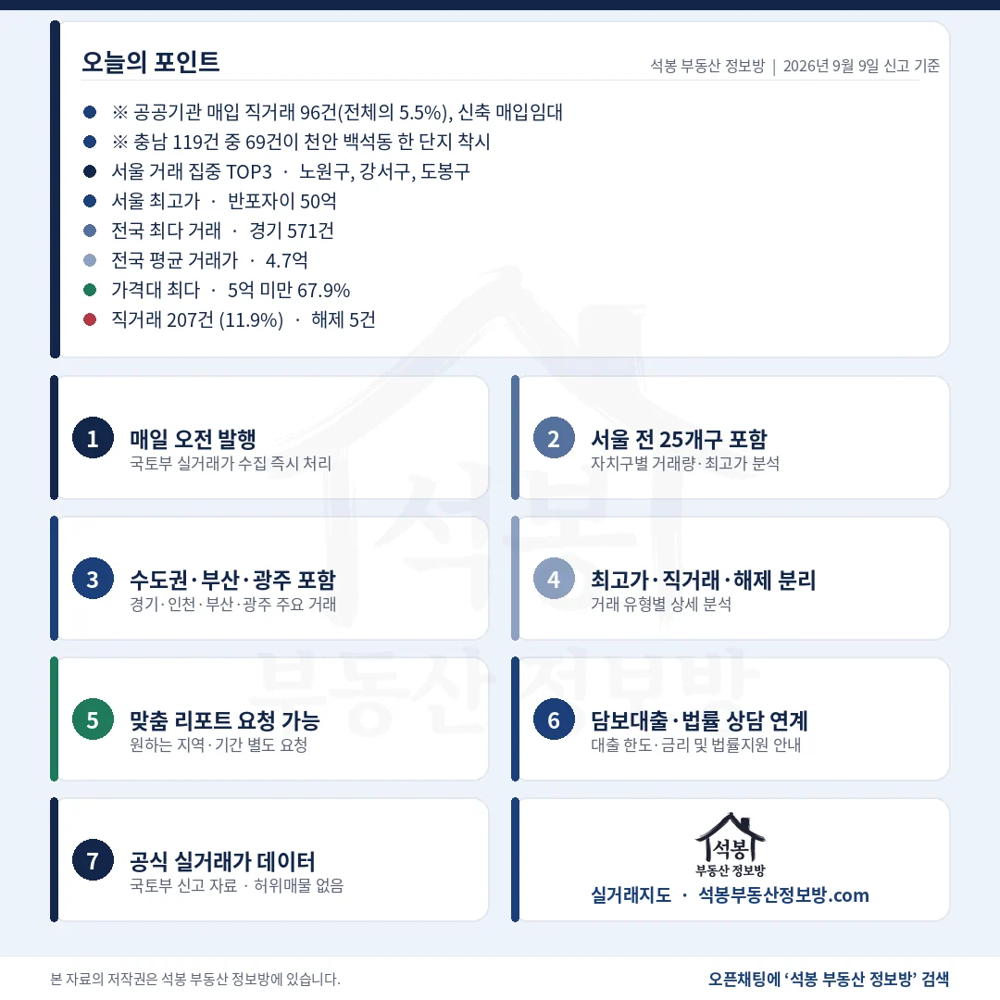

단지명을 누르면 그 단지의 실거래 내역과 시세를 바로 볼 수 있습니다. (면적과 평당 단가는 모두 전용면적 기준)
직거래 207건 11.9%, 96건은 하루에 몰린 신축 매입

거래유형·가격대
공공기관 몫을 빼면 직거래는 111건, 6.4%입니다.
거래유형
건수
비중
중개거래
1,529건
88.1%
직거래
207건
11.9%
해제·취소
5건
0.3%
직거래 207건 중 96건은 매수자가 공공기관입니다. 2026년 준공 신축의 전용 58~71㎡(17.7~21.6평) 소형이 3.4억~5.1억에 일괄 손바뀜했습니다.
가격대
건수
비중
5억 미만
1,178건
67.9%
5~10억
413건
23.8%
10~15억
87건
5.0%
15~20억
39건
2.2%
20억 이상
19건
1.1%
전국 평균 4.7억, 중위 3.6억입니다. 5억 아래 열에 일곱에는 소형 신축 96건도 얹혀 있습니다.
여기서부터는 회원에게 보여드립니다
카카오 로그인 3초면 전문을 읽을 수 있습니다. 무료입니다.
가입하시면 지역 시장조사 보고서(약식)를 2회 무료로 요청하실 수 있습니다.
이미 회원이면 같은 버튼으로 로그인만 됩니다
경기 571건 서울 158건, 서울 최다는 노원 15건

서울 구별 거래량
수도권 832건으로 47.9%, 절반 남짓이 지방에서 나왔습니다.
시도
신고
시도
신고
경기
571건
경남
83건
서울
158건
경북
77건
부산
132건
강원
76건
충남
119건
전북
69건
인천
103건
충북
60건
충남 119건 중 69건이 천안 백석동 한 단지, 부천 원미구 39건 중 27건이 역곡동 한 단지입니다. 빼면 충남 50건입니다.
서울 자치구
신고
비고
노원구
15건
중위 7.2억 쏠림 없음
강서구
13건
중위 7.3억
구로·도봉
각 12건
중위 7.5억 · 4.8억
송파구
9건
중위 17.5억 서울 상단은 여기부터
서초구
6건
중위 28.5억 건수는 열두째, 값은 첫째
서울 158건에는 공공기관 매입이 한 건도 없습니다. 건수 상위 노원·강서·구로·도봉은 중위가 8억 아래이고, 6건뿐인 서초구가 중위 28.5억입니다.
서울 1위 반포자이 50.5억은 직거래, 평당 1위는 압구정 26,788만원

서울 최고가 TOP5
총액 1위와 평당 1위가 갈렸고, 평당 1위는 다섯 중 가장 작은 집입니다.
단지
위치
거래가
전용면적
평당(전용)
1 반포자이
서초 반포동
50.5억
84.9㎡ (25.7평)
19,653만 2009년
2 한보미도 맨션2
강남 대치동
45.0억
115.1㎡ (34.8평)
12,930만 1985년
3 한양1차 (영동한양)
강남 압구정동
40.5억
50.0㎡ (15.1평)
26,788만 1977년
4 반포써밋
서초 반포동
37.6억
84.7㎡ (25.6평)
14,678만 2018년
5 리센츠
송파 잠실동
36.0억
85.0㎡ (25.7평)
14,003만
1위 반포자이 50.5억은 9월 8일 계약된 직거래이고 매수자·매도자 모두 개인입니다. 3위 한양1차는 전용 50.0㎡(15.1평) 소형인데 평당 26,788만원으로 반포자이보다 36% 높습니다.
수도권 밖 1위는 부산 엘시티 30.4억, 광주 상단은 18.9억

경기/인천/부산/광주
건수는 경기가 부산의 네 배인데, 최고가 차이는 1.6억뿐입니다.
지역
신고
최고가 단지
거래가
평당(전용)
경기
571건
분당 정자동 상록마을(우성)1
28.8억
5,856만
부산
132건
해운대 중동 엘시티
30.4억
6,955만
인천
103건
연수 송도동 힐스테이트 송도더스카이
19.7억
5,415만
광주
57건
남구 봉선동 쌍용스윗닷홈
18.9억
3,691만
부산 엘시티는 전용 144.3㎡(43.6평) 30.4억, 경기 1위상록마을(우성)1은 전용 162.6㎡(49.2평) 28.8억입니다. 지역 중위는 경기 4.8억, 부산 3.2억, 인천 3.5억, 광주 2.2억입니다.
10억 넘긴 145건 가운데 서울이 76건

구간
서울
경기
그 밖
10억 이상 145건
76건
52건
17건
15억 이상 58건
38건
14건
6건
20억 이상 19건
13건
4건
2건
20억 위 경기 4건은 분당 정자동 둘, 과천 둘입니다. 그 밖 2건은 부산 엘시티와 세종 어진동입니다.
9월 9일 통계에서 가장 조심해야 할 숫자는 직거래 11.9%입니다. 개인끼리 사고파는 거래가 늘어난 날이 아닙니다. 96건이 공공기관 매입이고, 천안 백석동에서 9월 4일 하루에 69건, 부천 역곡동에서 8월 27일 하루에 27건이 한꺼번에 잡혔습니다. 둘 다 2026년 준공 신축이고, 이 둘을 빼면 직거래는 111건 6.4%로 내려앉습니다.
가격 상단은 여전히 서울이 쥐고 있습니다. 10억을 넘긴 145건 중 76건, 20억 위 19건 중 13건이 서울이었습니다. 다만 서울 신고는 158건으로 경기 571건의 3분의 1에도 못 미쳐, 서울의 무게가 건수가 아니라 금액대에서만 드러났습니다. 전국 중위 3.6억과 서초구 중위 28.5억이 같은 날 나온 숫자입니다.
표 보는 법 · 직거래는 중개사를 끼지 않고 당사자끼리 한 거래입니다. 면적과 평당 단가는 모두 전용면적 기준이고, 평은 ㎡를 3.3058로 나눈 값입니다. 중위 거래가는 그 지역 거래를 금액순으로 줄 세웠을 때 한가운데 값이라 평균보다 체감에 가깝습니다. 건수와 비중은 해제·취소를 포함한 전체 신고 기준이고, 중위·평균만 해제·취소를 빼고 계산했습니다.
원자료: 국토교통부 실거래가 공개시스템 (2026년 9월 9일 신고분 기준) · 편집·제작: 석봉 부동산 정보방 · 신고분은 계약일과 신고일이 다를 수 있으며 해제·취소 건이 뒤늦게 반영될 수 있습니다 · 본 자료는 정보 제공 목적이며 투자 권유가 아닙니다.